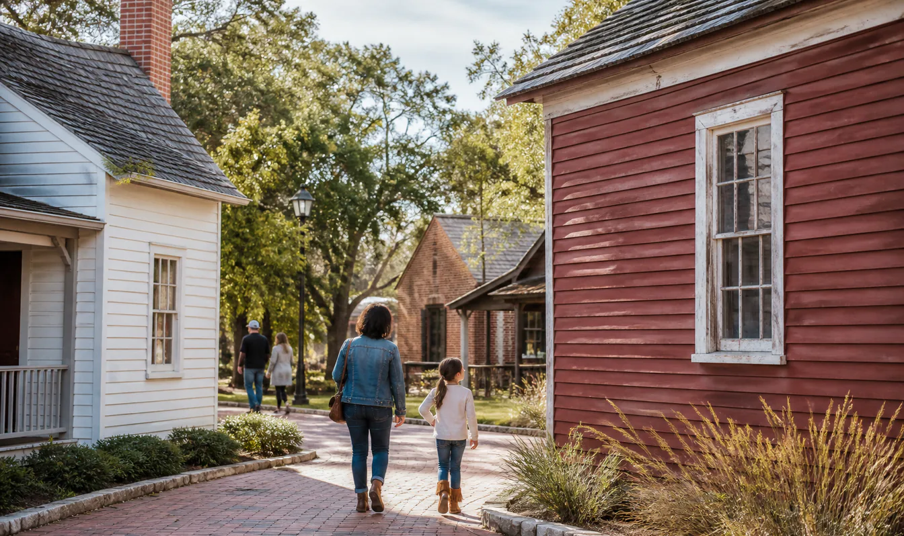

CultureOngoing benefit
Knapp Heritage ParkFree admission
Explore historic buildings and local heritage in Downtown Arlington with free admission.
Sat 10 AM-2 PMSun 1-4 PM
Knapp Heritage ParkArlington
What to expect
The park is open Saturday from 10 AM to 2 PM and Sunday from 1 to 4 PM. Visitors can explore its historic buildings and local heritage for free, and donations are accepted.
Plan your visit
Cost & inclusionsFree · donations accepted
Who qualifiesOpen to general visitors.
Address201 W Front St, Arlington, TX 76011
Useful to know
✓
Verified details
Verified 2026-08-07
Price✓
Date✓
Location✓
Conditions✓